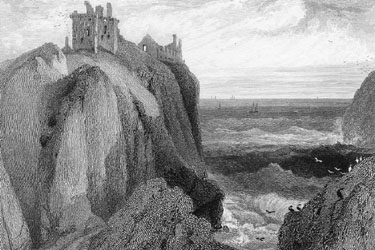
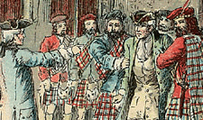

|
|
||||
|
|
Home | Corson Collection | Biography | Works | Image Collection | Recent Publications | Portraits | Correspondence | Forthcoming Events | Links | E-Texts | Contact Old Mortality(Tales of My Landlord, First Series)First Edition, First Impression: Tales of My Landlord. Collected and Arranged by Jedediah Cleishbotham, Schoolmaster and Parish-clerk of Gandercleugh. In Four Volumes. Vol. I (II-IV). Edinburgh: Printed for William Blackwood, Prince's Street: and John Murray, Albemarle Street, London, 1816. Composition | Synopsis | Reception | Links CompositionOld Mortality was conceived as the second volume of Tales of My Landlord, which was originally to consist of four volumes each containing a separate regional tale. As the 'tale of the West' took hold of Scott's imagination, however, it expanded to fill three volumes, the standard length for a novel.
For Waverley Scott had relied heavily on living testimony from veterans and witnesses of the 'Forty-five'. For Old Mortality, Scott relied on his own extensive knowledge of 17th-century historical sources, on contemporary pamphlets, and on oral traditions. Scott had a long-standing interest in the civil and ecclesiastical conflicts of the 17th century. He had included ballads describing the battles of the Covenanting period in the second volume of his Minstrelsy of the Scottish Border. His introduction and notes to those ballads provide a miniature history of the period and evidence that he was already a master of his sources. Scott's descriptions of Lanarkshire derive largely from a visit to Bothwell Castle, seat of Archibald Lord Douglas, in autumn 1799, which had included an excursion to the ruins of Craignethan Castle. Elements of both buildings are combined to construct the Castle of Tillietudlem in Old Mortality. Scott made further visits to Lanarkshire in 1801 (as a guest at Hamilton Palace) and in summer 1816. Old Mortality was published together with The Black Dwarf on December 2 1816. The printing process saw an unintended alteration to the title of the novel. Scott's manuscript indicates that it was originally to be called The Tale of Old Mortality, indicating that 'Old Mortality' was the source rather than the subject of the tale. Through a misunderstanding or oversight at Ballantyne's printing office, the title was abbreviated. The full-length title was restored in Douglas Mack's recent Edinburgh Edition of the novel (Edinburgh University Press, 1993).  SynopsisOld Mortality is set in 1679 against the backdrop of the military campaign waged by John Graham of Claverhouse's government forces against a Covenanting army. The Covenanters had risen against Charles II in protest against the reintroduction of Episcopalian church government. This had led to the destitution of around 270 ministers, mainly in the West of Scotland, who had refused to take an oath of allegiance, to accept presentation to their charges by lay patrons, to submit themselves to bishops, and to recognize holy days. The expelled ministers retained the loyalty of many of their parishioners and continued to conduct worship in remote country spots. The attempt to break up these conventicles by military force and continued persecution of the Covenanters led to open revolt. The hero, Henry Morton of Milnwood, a moderate Presbyterian, is arrested by Claverhouse's troops for harbouring John Balfour of Burley, a Covenanting friend of his father. Unknown to Morton, Burley has participated in the murder of Archbishop Sharpe of St. Andrews (hated by the Covenanters for deserting their cause and aiding the restoration of Episcopalianism), the event which triggered the uprising. Morton is sentenced to death but is saved through the intervention of Lord Evandale, his friend and rival for the hand of Edith Bellenden. Incensed by the oppressive behaviour of the government forces, Morton makes common cause with the Covenanters and becomes one of their military leaders, exerting a moderating influence and striving to check the cruel fanaticism of many of his colleagues. He repays Evandale's favour by twice saving his life, thus preserving the affection of the Royalist Edith. When the Covenanters are finally defeated at Bothwell Bridge, Evandale again intercedes to limit Morton's sentence to exile. He enters the service of William of Orange, rises to the rank of major-general, and after the Revolution of 1688, returns to Scotland. He learns that Edith, believing him dead, is on the verge of marrying Evandale. Resolving not to interfere with their marriage, he remains incognito. He discovers, though, that Evandale's life is threatened by Frank Inglis, a fanatical persecutor of Covenanters punished by Evandale for mutiny. Morton rides to Evandale's rescue but is unable to prevent him being murdered in an ambush. With his dying words, Evandale blesses the union of Morton and Edith. ReceptionSo sure was the bookseller John Murray of the success of the Tales, that he ordered a second edition before the first went on sale. Within six weeks both editions were exhausted and a third in the press. Commercial success was matched by critical approval. Many reviewers echoed Scott's own judgment, that while The Black Dwarf re-trod familiar ground, Old Mortality was 'the best I have yet been able to execute' (letter to Lady Louisa Stuart, 14 November 1816). In some quarters, though, Scott was accused of caricaturing the Covenanters and whitewashing the Royalists. In particular, the distinguished Presbyterian church historian Thomas M'Crie sought to vindicate the character of the Covenanters in his review in the Edinburgh Christian Instructor. His views were echoed in the British Review and Eclectic Review but refuted by Scott himself who anonymously reviewed his own novel in the Quarterly Review. Here Scott proclaimed himself suspicious of 'that very susceptible devotion which so readily takes offense' and argued that 'such men should not read books of amusement'. On the whole, Scott's attempts to mystify public and reviewers as to the authorship of the new volume proved a failure, as it was widely perceived to have been written in the style of the 'Author of Waverley'.
 Links
Last updated: 19-Dec-2011 |
|||